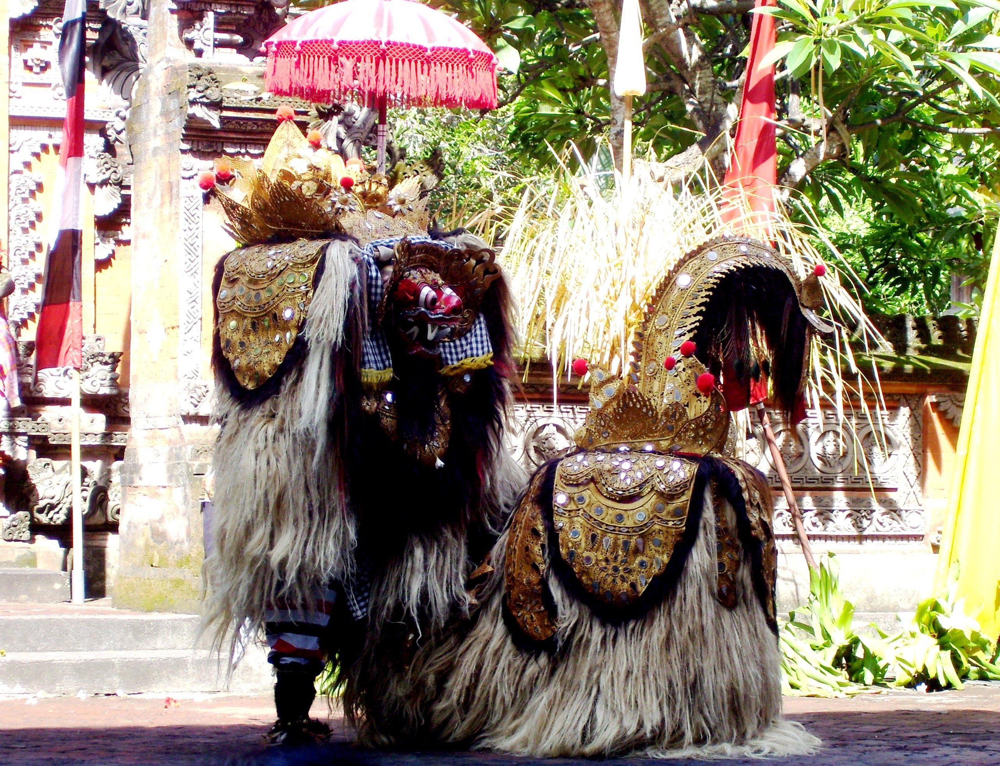

Tari Barong bagi masyarakat Bali adalah salah satu tarian yang cukup terkenal. Tarian yang berasal dari Bali ini bukan hanya sekedar sebuah tarian pertunjukan namun juga ada makna unsur-unsur kepercayaan di dalamnya. Tari Barong ini menceritakan tentang mitologis gambaran binatang beruang yang memiliki kekuatan gaib dan dianggap dapat melindungi manusia.
Tari Barong merupakan peninggalan kebudayaan pra-Hindu yang melambangkan pertempuran antara kebaikan (dharma) dan keburukan (adharma). Menurut keyakinan masyarakat Bali, khususnya yang beragama Hindu, kebaikan dan keburukan selalu berdampingan atau disebut juga sebagai Rwa Bhineda. Kata Barong berasal dari kata bahruang yang berarti beruang.